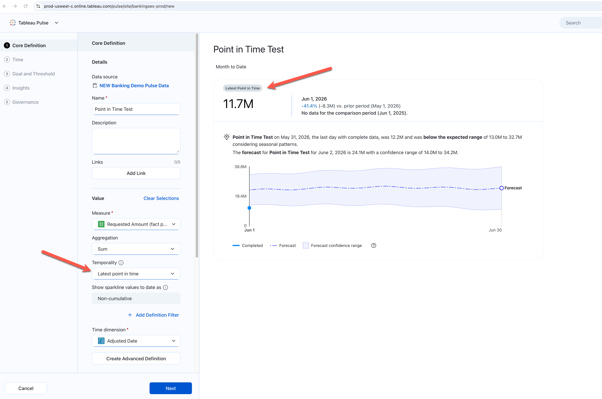
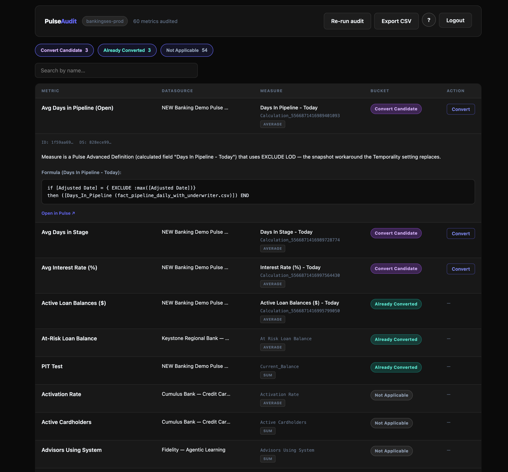
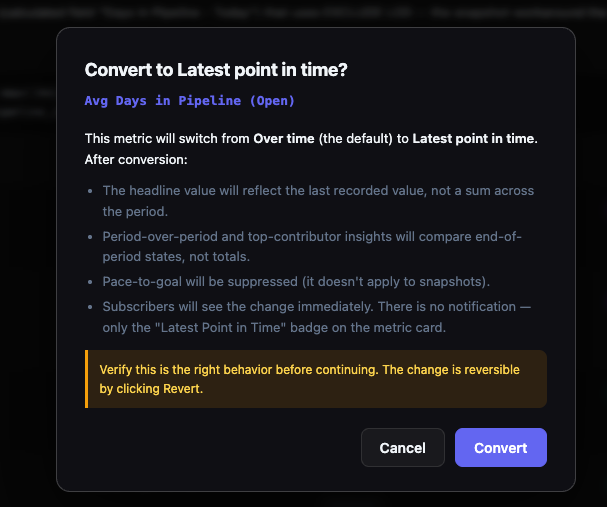

Until recently, Pulse only knew one way to roll daily values into a monthly figure: add them up. That works for revenue and transactions. It doesn't work for an account balance, where the month-end number is the last reading, not the sum of every reading along the way.
Two kinds of metrics
Most analytics tools make an implicit assumption when you ask them to chart a metric over time: the values accumulate. Revenue sums up. Transactions count up. The longer the window, the bigger the number. This is true for a lot of metrics, and it's the right behavior.
But it's not true for all of them. Some metrics don't accumulate. They represent a state at a moment in time. An account balance on December 31st isn't the sum of every deposit over the year. It's the net position at that close. Inventory on hand isn't the total of every unit ever received. It's what's sitting in the warehouse right now. Open support cases isn't the count of every case ever opened. It's how many are unresolved as of this moment.
These are different questions. The data model for answering them looks different. The way you aggregate them looks different. Confuse one for the other and the output looks wrong in ways that are hard to explain to someone who isn't already looking at the data.
A snapshot at one moment
Captures the state of something at a specific instant. The value is tied to a timestamp. Ask the same question at a different moment and you get a different answer.
A calculation over a window
Summarizes events or values across a time range. The value depends on what happened and how wide a window you look through. Change the window, change the answer.
This is the gap Pulse closed. Up until now, viewing a balance metric for the current month to date would sum up each day's recorded value across the time range, which produces a number that is both wrong and inexplicable to anyone who isn't looking at the underlying data model. Snapshot metrics weren't supported natively, so analysts worked around the absence. Now they don't have to.
How it was being handled
Tableau published a workaround. The help article explains how to use a Last Aggregate Level of Detail calculation to force Pulse to display the last recorded value in a period instead of summing. The technique works. I've used it and recommended it to customers.
The problem is what it requires. You need to understand how LOD calculations work, how they interact with the published data source Pulse is querying, and how that affects what the metric actually displays. For a Tableau developer, that's a twenty-minute fix. For a business analyst configuring metrics in Pulse for the first time, it's a dead end.
The deeper issue was that snapshot metric support simply wasn't built into the definition layer yet. The LOD workaround was a reasonable bridge. It got the right number on screen, but the logic belonged in the metric definition, not in the data source. That's what this release addresses.
What Pulse now does
The new release adds a Temporality setting on the metric definition page. The dropdown has two options: "Over time" (the default, and what every existing metric has been doing) and "Latest point in time." Switch to the latter and save. The change takes effect immediately, with no republishing or LOD calculation needed.
Pulse handles forward-filling, so a balance recorded at month-end carries forward into a new period where no new data has been recorded yet. The BAN and the sparkline now agree.

What changes downstream
The sparkline matching the BAN is the visible fix. It matters, but it's not where the real change is. That's what happens to insights.
Pulse generates automated insights: period-over-period change, top contributors by dimension, unusual highs and lows, trend detection. All of those were built around the assumption that metrics accumulate. Marking a metric as Snapshot changes what every one of those calculations does.
| Insight type | What changes in Snapshot mode |
|---|---|
| Period-over-period change | Compares last recorded values in each period, not sums. December 31st balance vs. November 30th balance. That's the right question. |
| Top contributors by dimension | Uses the rollup method per entity. Shows which accounts or segments had the highest balance at end of period, not which accumulated the most transaction volume. |
| Unusual high / low | Flags whether the end-of-period value is outside the expected range. Avoids false positives from mid-period fluctuations that resolved before the period closed. |
| Trend detection | Detects sustained shifts in end-of-period values, not noise in daily data. More reliable for strategic patterns. |
| Pace to goal | Suppressed entirely. Pace to goal is a forecasting concept that projects where a cumulative value will end up. It doesn't apply to a snapshot. Showing it would be misleading. |
The insight changes aren't cosmetic. Period-over-period on a cumulative metric compares sums. On a snapshot metric it compares states. Same label, materially different math, and the right behavior in both cases only if the metric type is defined correctly.
What this means for how you model data
Before this change, getting snapshot metrics right in Pulse required a developer who understood LOD syntax and how it interacted with the published data source. The metric worked correctly only because of a calculation someone wrote. If that person left, or the data source structure changed, the behavior could drift silently and nobody would know until a business user noticed.
Now that setting lives in the metric definition. The analyst who creates the metric marks it as a snapshot. That flows through to the BAN, the sparkline, and every insight wherever the metric appears. The person who owns the business question also owns the configuration. That's where it should have been.
That's what matters to me. Not the chart fix. Snapshot metric behavior now lives where it belongs, in the definition, rather than in a calculation buried in a data source that most business analysts will never see.
Changing a metric you've already published
Flipping an existing metric from "Over time" to "Latest point in time" doesn't break the chart. The sparkline redraws using the new logic, and historical periods recalculate so the trend still shows continuity instead of an abrupt break at the toggle date.
If the metric was originally configured with the LOD workaround, the new setting appears to take precedence. Pulse may just be applying the same logic natively now. Either way, once Temporality is set I'd remove the LOD, mostly so the next person looking at the data source isn't trying to figure out which mechanism is doing the work.
The thing worth flagging is what subscribers see. There's no notification when a metric's Temporality changes. The only signal is a "Latest Point in Time" badge that appears on the metric card. A follower who's been watching the metric for weeks will notice the numbers shifted, but they won't see a banner explaining why. If you're flipping a high-visibility metric, send a note. The badge won't carry the message on its own.
What to do now
If you're creating new metrics, treat Temporality as a required step. Anything that represents a state at a moment, like a balance, inventory level, headcount, pipeline value, or open case count, should be flipped to "Latest point in time" before you publish. Getting it right on day one is a single dropdown click. Catching it later means a confused stakeholder and a metric whose history needs a footnote.
If you own existing metrics, audit your published library. Prioritize anything financial, inventory-related, or balance-shaped, where the wrong aggregation produces a plausible-looking number rather than an obvious failure. The LOD workaround was a bridge. Move the logic into the definition where it belongs. PulseAudit can scan your site and find them for you.
If you follow Pulse metrics as a subscriber, period-over-period change, top contributors, and unusual high/low all behave differently on a snapshot metric than on a cumulative one. Same insight names, different math. When a metric gets the "Latest Point in Time" badge, the numbers will shift. That's the metric finally answering the right question.
PulseAudit
Auditing by hand means opening every metric definition one at a time. PulseAudit is a small tool that does it for you. Connect it to your Tableau Cloud site and it scans every Pulse metric, detects which ones use the EXCLUDE LOD pattern in the measure formula, and surfaces them in a table.

From there you can review the formula and flip the Temporality setting directly, without opening the Pulse UI for each one. The change is reversible.

It runs locally on your machine. Get it on GitHub →